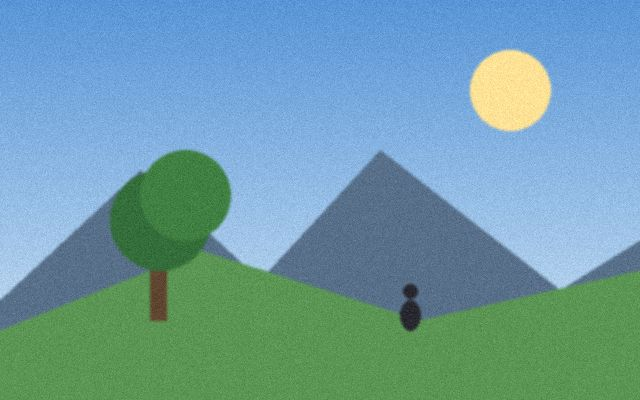

01 你遇過嗎
第一幕手繪，第五幕
變簡報
？
第 1 幕
第 5 幕
02 為什麼
「手繪風」只是一個
形容詞
03 風格卡
風格卡 · sketch-board
roughness
1.0
bowing
1.0
填色
hachure 斜線
顏色
藍＝概念
紅＝重點
roughness 0.3
roughness 1.0
roughness 2.2
改一個數字，整支影片
一起變
04 固定種子
seed＝0：每格都抖
固定 seed：每格一樣
05 Excalidraw 匯入
自動換成風格色
06 素材也對齊

葉綠體
交付前自動檢查
色碼：只用風格色
字級：不小於下限
閱讀時間：讀得完
「幫我做一支手繪風的教學動畫」
剩下的，交給這套
skill
code-animation-explainer · github.com/FW1201/code-animation-explainer